For normal programs, fixpoints of  correspond to (two-valued)
Herbrand models of 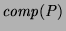. For each such fixpoint there are
corresponding fixpoints of 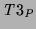, 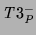 and
where
correspond to (two-valued)
Herbrand models of 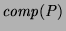. For each such fixpoint there are
corresponding fixpoints of 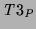, 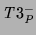 and
where  is empty, and a corresponding three-valued model of .
The following propositions generalise this result to the case where
is empty, and a corresponding three-valued model of .
The following propositions generalise this result to the case where  may be non-empty.
may be non-empty.
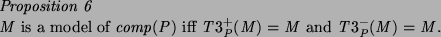
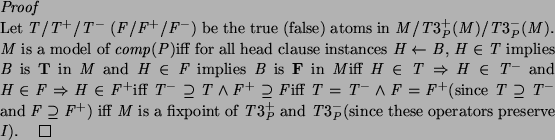
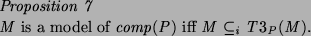
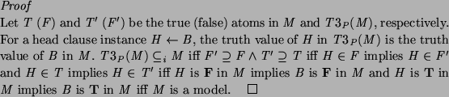
[Apt and BolApt and Bol1994] gives a detailed account of the relationships between strong models, and the operational semantics. Strong models coincide with fixpoints of and the 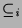-least strong model and fixpoint captures the operational semantics [FittingFitting1985]. The true atoms in this model are those in 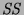 and the false atoms are those in 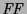, the atoms with finitely failed SLDNF trees. [KunenKunen1987] established conditions under which these sets of atoms are also the two-valued logical consequences of the program. This fixpoint characterisation of the operational semantics is potentially very useful for program analysis and alternative operational semantics (bottom-up execution). However, the model theory is not particularly helpful for programmers to reason about correctness or debug their programs.
In all strong models, successful atoms are true, finitely failing atoms are false and thus only looping atoms can be inadmissible. It is not possible to under-specify the behaviour of predicates as we can using our definition of a model. Fifteen of our versions of even and odd terminate for all ground queries so the intended interpretation is not a strong model. However, over-specification is possible in the sense that looping atoms can be true or false in strong models. For the version of even and odd where everything loops the intended interpretation is a strong model.
The following lemma relates our model theoretic semantics and the operational semantics, essentially establishing soundness and an important form of completeness. With our definition of models of clauses, truth and falsity of clause heads is propagated to clause bodies. The lemma shows they propagate from the root to positive leaves of SLDDNF trees (in the other direction, inadmissibility can be introduced). This is the contrapositive of the normal statement of results such as soundness.
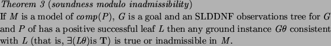
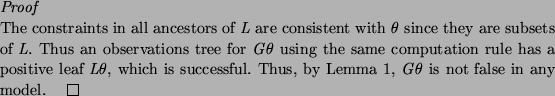
If we consider computed answers being returned rather than equality constraints, this theorem tells us that any instance of a computed answer is true or inadmissible in every model.
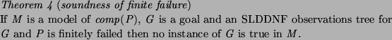
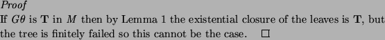
The following completeness result is of significant practical use to
programmers (as are similar results for the two-valued case we have
stated in the past). By completeness we mean lack of missing answers
in an ``all solutions'' computation which terminates normally (like
[Drabent and Mi kowskaDrabent and
Mi
kowskaDrabent and
Mi kowskapear]) rather than the existence of a tree (which may
or may not be found in practice). It could also be seen as a form of
``all solutions'' soundness.
kowskapear]) rather than the existence of a tree (which may
or may not be found in practice). It could also be seen as a form of
``all solutions'' soundness.
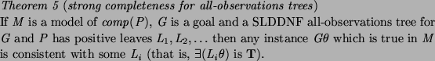
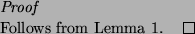
Many other completeness results (for example, our Theorem 2) are far less useful for programmers for three reasons. First, even if some proof strategy is complete in theory, generally the completeness is dependent on forms of fairness (both computation rule and search strategy) which are not adhered to in implementations. Second, even with a fair implementation we cannot rely on a proof being found in practice due to resource limits and other runtime errors (fair search makes this problem worse because algorithms with acceptable complexity become extremely difficult to express). Third, completeness results often concern atoms which are true in all models (with a suitable definition of a model). Though a programmer may know an atom is true in their intended interpretation (and be confident that the interpretation is a model), knowing it is true in all models is unlikely. In fact, the simplest way for a programmer to be confident something is true in all models is by reasoning about termination of the operational semantics. Similarly, we are not convinced that many programmers find it simple or natural to reason about the least model or all minimal models or well-founded models or perfect models or stable models.
In fifteen of the sixteen versions of even/1 and odd/1 it is very easy to reason that ground queries terminate. It is also easy to show our intended interpretation is a model, by checking one clause at a time. From our completeness result we can conclude that goals which are true in our intended interpretation will be successful, assuming there are enough resources at runtime. No other completeness result gives us this information. They rely on fairness and models which are not our intended interpretation. Some results do not apply to all versions (for example, not all versions are stratified).
The relationship between the operational semantics and various forms of model-theoretic semantics can be summarised by the following table:
| Operational semantics | may succeed | must loop | may finitely fail |
| -least strong model | T | I | F |
| any strong model | T | T/I/F | F |
| any model | T/I | T/I/F | I/F |
We have a simplified view of the operational semantics for comparison purposes. Success and finite failure are generally conditional on fairness; looping may occur with an unfair search or computation rule. Looping may also occur for successful queries if all solutions are sought. Some queries cannot succeed or finitely fail, even with fairness, and are classified as ``must loop''. We have also ignored floundering, which can occur as well as or instead of the other behaviours. For example, atoms which are T in the -least strong model may actually flounder instead of succeeding.
Compared to the first two semantics, the last two require much simpler reasoning for the programmer to establish correctness. The last semantics (which is what we propose) is less precise than the strong model semantics. However, the difference in precision is only for inadmissible atoms. If we know an atom is T or F the strong model semantics gives us no additional information about how the atom behaves. Since we don't care about the behaviour of inadmissible atoms the lack of precision is of no concern, but the greater flexibility (existence of more models) is very useful for allowing more natural interpretations without restricting programming style.